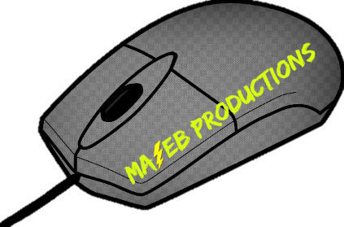

Logo History
Home
About Us
Our Studio
Super_Mook_Mack's Projects
ToxicPomasto's Projects
Logo History
Contact Us
August 19, 2017 - November 05, 2017 | First logo

November 05, 2017 - Present | Second logo